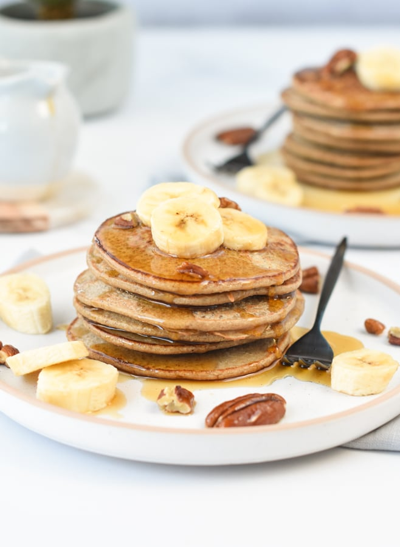

Three-Ingredient Banana Pancakes

Description
Amazingly simple and quick banana pancakes that even my 2-year-old couldn't get enough of. Serve with agave nectar, syrup, honey, butter, nutella, the options are endless.
Ingredients
- 1 medium banana
- 2 eggs
- ½ tablespoon ground cinnamonr
- ½ teaspoon butter
Steps
- Mash banana in a bowl; add eggs and beat until well incorporated. Add cinnamon and stir.
- Heat butter in a skillet over medium-low heat. Pour a small amount of batter into the center of the skillet. Cook until pancake is firm, 3 to 5 minutes. Flip carefully and cook 1 minute more.